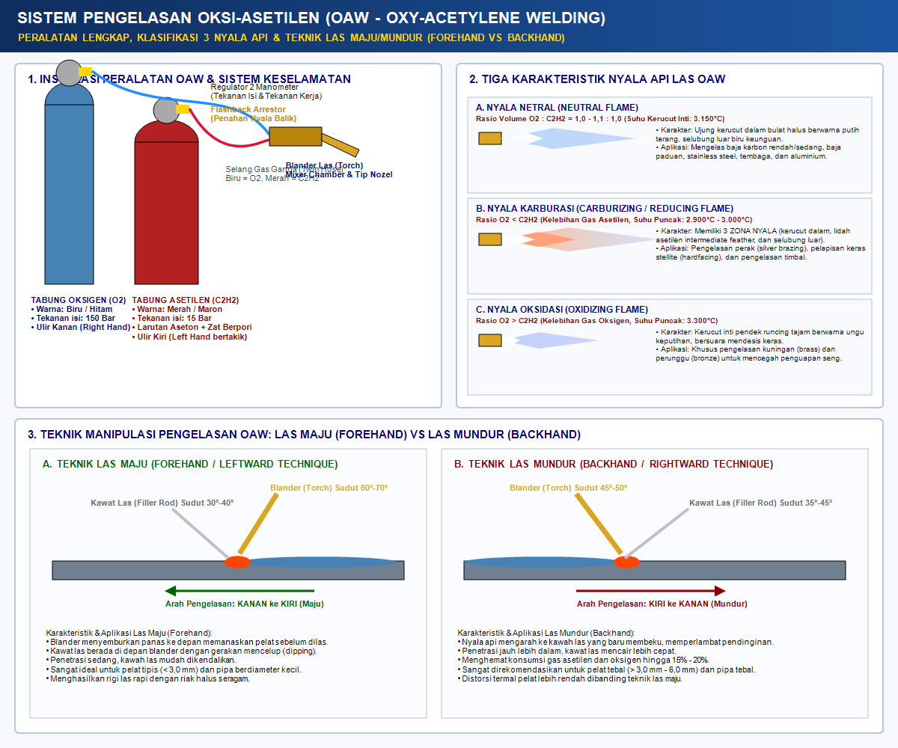
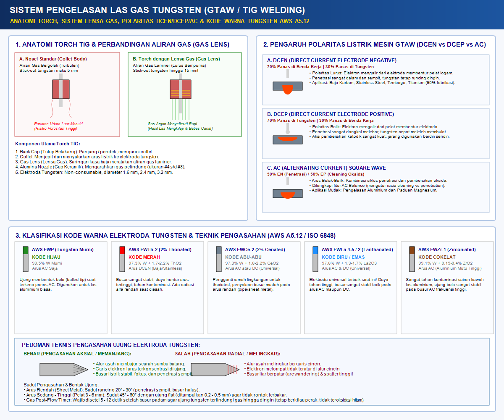
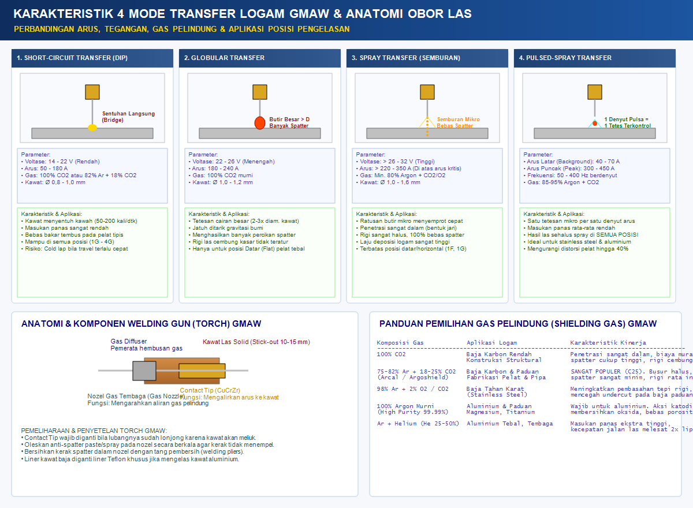
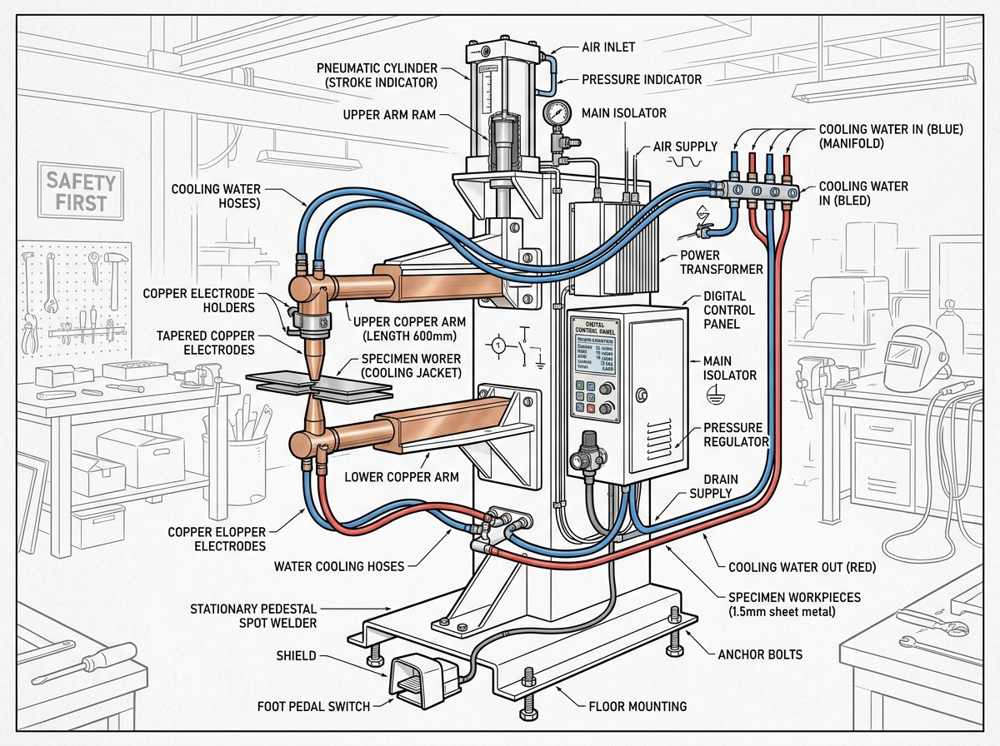

⚡ Area Kerja Las SMAW: Kendalikan Stang Las Sendiri
POSISI LAS: 1G - Groove Datar (Flat) | SESI: Sesi Uji #1
ARUS LAS: 95 A | VOLTASE: 24.2 V
PANJANG BUSUR: 2.5 mm | KECEPATAN TARIK: 14 cm/menit
SUDUT KERJA: 90° | SUDUT JALAN: 75° | KETENTUAN: ✅ SESUAI AWS D1.1
HASIL PENGELASAN: 0.0 cm / 20 cm
🔍 HASIL PENGELASAN SMAW ANDA (DINAMIS & KOMPARASI FOTO ASLI 90%)
🔎 RIGI MANIK LAS 3D (ORBIT INTERAKTIF)
✅ Terak Bersih
📸 FOTO SPESIMEN ASLI BENGKEL (90% MIRIP ASLI) FOTO ASLI

📸 Foto Nyata: Rigi sisik ikan mengkilap (AWS E6013) hasil pengelasan stabil.
🔬 PENAMPANG MAKRO ETSA DINAMIS (CROSS SECTION) Penetrasi 100% (Lolos AWS)
🔬 FOTO ASLI PENAMPANG MAKRO ETSA NITAL 2% LAB METALURGI

🔬 Foto Nyata: Penetrasi akar 100% tembus menyatu dengan logam induk ASTM A36.
🔥 Pemotongan Oxy-Fuel: Kendalikan Blender Sendiri di Atas Pelat
SUHU TEPI PELAT: 25 °C | HASIL: Menyesuaikan Otomatis
TUAS OKSIGEN POTONG: TERTUTUP
KECEPATAN POTONG: 0 cm/menit
KEMAJUAN BELAHAN: 0%
🔍 HASIL TEPI POTONG ANDA (SESUAI GERAKAN TANGAN ANDA)
Kesikuan 90° Siku🔎 TAMPILAN GARIS SERET (DRAGLINES HASIL POTONG ANDA)
Garis seret (*dragline*) vertikal tegak membuktikan kecepatan gerak tangan Anda stabil dan seimbang.
📸 FOTO REFERENSI ASLI TEPI POTONG BENGKEL (90°)

Spesimen asli pelat baja tebal dipotong siku 90° tegak lurus diuji mistar baja.
âš¡ Pemotongan Plasma Arc Cutting (PAC): Kendalikan Torch Plasma Presisi & Kompresor Udara
MATERIAL: Baja Karbon (SPHC) 6.0 mm | SUHU JET: 25.000 °C
STATUS BUSUR: STANDBY (Trigger Mati)
KECEPATAN: 0 cm/menit | KEMAJUAN: 0%
MUTU KERF: Menyesuaikan Otomatis
🔠HASIL TEPI POTONG PLASMA (SESUAI GERAKAN & PARAMETER ANDA)
ISO 9013 Kelas 1 (Siku & Bebas Dross)🔎 TAMPILAN PENAMPANG KERF & DRAGLINES HASIL POTONG ANDA
Sudut seret (dragline lag) 10°–15° membuktikan laju dorong dan kuat arus berada pada titik kesetimbangan optimal.
📸 FOTO REFERENSI ASLI TEPI POTONG PLASMA INDUSTRI
Spesimen Uji Pelat Baja Potong Plasma Bersih
Permukaan halus bebas kerak terak (*dross-free*), celah sempit (*narrow kerf*), dan sudut bevel < 2°.
PRINSIP KERJA & TEORI SAINS PLASMA ARC CUTTING (PAC)
Modul Pembelajaran Mandiri Siswa Berdasarkan Elemen Fabrikasi Logam Kurikulum Merdeka (Deep Learning)
🔧 Anatomi & Konstruksi Torch Plasma
- Elektroda Katoda (-): Berbahan tembaga dengan inti Hafnium (untuk udara/Oâ‚‚) atau Tungsten (untuk gas inert), titik pelepasan elektron suhu tinggi.
- Swirl Ring (Vortex Generator): Cincin pemutar gas dengan lubang tangensial yang memutar udara kompresor menjadi pusaran sentrifugal berkecepatan tinggi.
- Nozzle Konstriksi Anoda (+): Moncong tembaga dengan lubang berdiameter mikro (1.0 - 1.3 mm) yang menyempitkan kolom busur listrik secara ekstrem.
- Shield Cap & Retaining Cup: Pelindung nosel dari percikan lelehan logam serta menjaga kestabilan jarak bebas (*standoff*).
🌀 4 Tahap Terjadinya Busur Plasma
- Gas Pre-Flow: Udara tekan 5.5 bar dialirkan untuk membersihkan rongga torch dan membentuk pusaran vorteks.
- Pilot Arc (HF): Tegangan frekuensi tinggi memercikkan api loncatan kecil antara elektroda (-) dan nozzle (+), mengionisasi molekul gas menjadi plasma.
- Transferred Main Arc: Saat nosel mendekati pelat logam (<4 mm), busur meloncat ke benda kerja (anoda + grounded), melipatgandakan suhu hingga 25.000°C – 30.000°C!
- Ejeksi Kinetik Supersonik: Semburan jet gas bertekanan tinggi meniup keluar lelehan logam cair ke bawah secara tuntas menghasilkan celah (*kerf*).
âš–ï¸ Keunggulan PAC vs Pemotongan Oxy-Fuel
- Variasi Material Universal: PAC mampu memotong semua jenis logam konduktif (Baja Karbon, Stainless Steel 304, Aluminium, Tembaga), sedangkan Oxy-Fuel hanya bisa baja karbon.
- Tanpa Pemanasan Awal (Preheat): PAC memotong seketika (0 detik), tanpa perlu memanaskan pelat hingga merah ceri 900°C.
- Distorsi Panas Rendah: Kecepatan potong tinggi membuat HAZ (*Heat Affected Zone*) sangat sempit sehingga pelat tipis tidak melengkung/deformasi.
- Ekonomis & Ramah Lingkungan: Memakai udara tekan kompresor biasa, tanpa tabung gas asetilen yang mahal dan berisiko ledak.
ðŸ›¡ï¸ SOP Keselamatan Kerja K3LH Industri (PAC)
- Proteksi Radiasi Optik: Wajib memakai kacamata pelindung atau helm las kaca gelap **Shade No. 8 s.d. 11** (intensitas radiasi UV/Cahaya tampak jauh lebih tinggi daripada Oxy-Fuel).
- Bahaya Sengatan Tegangan OCV: Tegangan sirkuit terbuka plasma mencapai **250 - 300 V DC**! Jangan sekali-kali menyentuh ujung nosel atau elektroda saat mesin menyala.
- Sistem Ventilasi / Fume Extraction: Pancaran plasma memproduksi gas Ozon ($O_3$) dan Nitrogendioksida ($NO_2$). Gunakan blower penghisap asap dan masker respirator partikel logam.
- Proteksi Pendengaran (Ear Plug): Suara desis semburan jet gas berkecepatan tinggi dapat melebihi 90 dB.
✨ Pengelasan OAW: Kendalikan Torch & Celupkan Kawat Las RG 45 Sendiri
SUDUT KERJA: 90° | SUDUT JALAN: 65° (Maju)
KAWAH LAS (PUDDLE): Belum Terbentuk | TEKNIK: Forehand (Maju)
CELUPAN KAWAT: 0 Kali | NYALA: Netral (3.150°C)
STATUS PELAT: Aman (Bebas Bolong) | SESI: Sesi #1
🔍 HASIL PENGELASAN OAW LENGKAP (DINAMIS, FOTO NYATA, MAKRO ETSA & UJI TEKUK)
🔎 TAMPILAN RIAM LOGAM HASIL CELUPAN ANDA RIAM TERPADU
Riam las OAW terbentuk dari fusi paduan lelehan tepi pelat tipis dan batang kawat pengisi RG 45 yang Anda suapkan secara ritmis.
📸 FOTO SPESIMEN ASLI BENGKEL OAW (RG 45) FOTO NYATA OAW
📸 Foto Nyata: Riam semi-lingkaran khas kawat RG 45 dengan peleburan api netral 3.150°C tanpa terak fluks dan bebas bolong (*burn-through*).
🔬 PENAMPANG MAKRO ETSA DINAMIS (CROSS SECTION OAW) Penetrasi Fusi Penuh
Irisan penampang sambungan temu (butt joint): Menunjukkan fusi sempurna antara lelehan logam induk dan kawat RG 45 dengan penetrasi tembus akar tanpa kerak oksida.
🔬 UJI MEKANIK TEKUK (HAMMER BEND 90°) & AWS D1.2 LOLOS UJI
Akar las menyatu erat tanpa retak terbuka (*no open defects*). Sambungan ulet dan paduan kawat menyatu sempurna.
- Baja karbon rendah (Mild Steel) & pelat lembaran tipis (90% pekerjaan fabrikasi).
- Baja tahan karat (Stainless Steel) menggunakan pasta fluks pelindung.
- Besi cor kelabu (Cast Iron) untuk perbaikan retak mesin.
- Tembaga murni (Copper) dan paduan aluminium (dengan fluks khusus).
📘 PANDUAN TEKNIK PENGELASAN OKSI-ASETILEN (OAW) — ACUAN BUKU TEKNIK FABRIKASI LOGAM FASE F (BAB VI)
⚗️ 1. Termokimia Pembakaran Gas 2 Tahap
OAW adalah pengelasan fusi termal menggunakan nyala api hasil pembakaran gas asetilen ($C_2H_2$) dan gas oksigen ($O_2$) murni dengan temperatur puncak 3.100°C - 3.250°C. Reaksi berlangsung dalam 2 tahap:
- Reaksi Primer (Kerucut Dalam / Inner Cone):
C₂H₂ + O₂ → 2CO + H₂ + 448 kJ/mol (3.150°C)
Gas Karbon Monoksida (CO) dan Hidrogen (H₂) bersifat reduktor kuat yang aktif menyelimuti kawah cair dan mengikat oksigen bebas sehingga cairan baja terlindung mutlak dari oksidasi atmosfer luar! - Reaksi Sekunder (Selubung Luar / Outer Envelope):
2CO + O₂ (udara) → 2CO₂danH₂ + ½O₂ (udara) → H₂O (1.200°C - 2.100°C)
Mengonsumsi oksigen udara sekitar sambungan sehingga menciptakan kubah pelindung gas lembam alami.
🥢 2. Klasifikasi Bahan Tambah AWS A5.2
Standar American Welding Society (AWS A5.2) menetapkan sistem kode bahan tambah batang kawat las baja karbon untuk OAW:
- Huruf [ R ]: Rod (Batang kawat pengisi yang disuapkan manual).
- Huruf [ G ]: Gas Welding (Khusus proses pengelasan gas oksi-asetilen).
- Dua Digit [ 45 / 60 / 65 ]: Kuat tarik minimum deposit logam las dalam ribuan psi (ksi):
• RG 45: Kuat tarik min 45 ksi (310 MPa). Baja karbon rendah tanpa paduan, sangat liat/ulet, ideal untuk lembaran tipis 1-2 mm.
• RG 60: Kuat tarik min 60 ksi (415 MPa). Mengandung deoksidator Silikon (Si) dan Mangan (Mn) untuk baja konstruksi dan pipa.
• RG 65: Kuat tarik min 65 ksi (450 MPa). Kekuatan tarik tinggi untuk bejana dan pelat tebal.
🔥 3. Tiga Karakteristik Nyala Api OAW & Kegunaan Khusus Industri
| Jenis Nyala | Rasio Oâ‚‚ : Câ‚‚Hâ‚‚ | Ciri Visual & Suhu | Karakter Akustik & Kimia | Kegunaan Logam & Industri Khusus |
|---|---|---|---|---|
| 🔥 Nyala Netral | 1,0 : 1,0 s/d 1,1 : 1,0 (Seimbang) | 2 zona: Kerucut inti putih bulat tumpul (3.150°C - 3.200°C), selubung luar biru keunguan | Desis lembut stabil. Gas CO & H₂ reduktor aktif mengikat O₂ bebas sekitar lelehan | Baja karbon rendah (Mild Steel), baja konstruksi, baja tahan karat (stainless), besi cor, tembaga, dan aluminium (90% pekerjaan fabrikasi umum). Sambungan liat & ulet sempurna. |
| 💨 Nyala Karburasi (Reduksi) | < 1,0 (Asetilen berlebih, ~0.85-0.95 : 1) | 3 zona: Kerucut dalam putih, lidah bulu asetilen (feather) 1.5x-2x, selubung berasap (2.900°-3.000°C) | Hembusan lembut tenang. Kelebihan atom karbon masuk ke lelehan membentuk sementit Fe₃C | Hardfacing / Pelapisan Keras (kawat Stellite / Krom-Karbida), Silver Brazing & pematrian kuningan bebas oksidasi, paduan nikel/Monel, las timbal hitam suhu rendah. Dilarang untuk baja biasa (jadi getas). |
| ⚡ Nyala Oksidasi | > 1,15 s/d 1,5 : 1 (Oksigen berlebih) | 2 zona ramping: Kerucut dalam runcing pendek keunguan (3.300°-3.480°C), selubung ramping pucat | Suara mendesis nyaring keras (loud roaring hiss). Bunga api liar meletup-letup membakar besi | Pengelasan Kuningan (Brass) & Perunggu (Bronze): sengaja membentuk lapisan film tipis Seng Oksida (ZnO) untuk mencegah penguapan seng beracun. Pembersihan permukaan (flame cleaning). Dilarang untuk baja (keropos berbusa). |
🧠5. Standar 14 Posisi Pengelasan OAW (AWS A5.2, AWS D1.1, & ASME IX)
Pengelasan oksi-asetilen mencakup 14 posisi baku dengan teknik kendali gravitasi dan sudut obor blander:
- Posisi Sambungan Sudut (Fillet 1F - 4F):
• 1F: Palung 45° perahu. Cairan stabil di dasar sudut. Sudut kerja 45°, sudut jalan 65° forehand.
• 2F: Sudut horizontal. Obor 40°-45° sedikit menekan ke pelat bawah untuk mencegah lelehan melorot (sagging).
• 3F Naik/Turun: 3F-Up (vertikal naik merambat bertahap) untuk penetrasi kuat; 3F-Down (vertikal turun cepat) untuk pelat tipis bebas bolong.
• 4F: Di atas kepala (overhead). Kawah las dijaga sangat kecil, mengandalkan tegangan permukaan melawan gravitasi. - Posisi Sambungan Tumpul (Groove 1G - 4G):
• 1G: Pelat datar temu. Sudut kerja 90°, jalan 60°-70° maju forehand. Celup kawat RG 45 ritmik.
• 2G: Horizontal temu pada dinding tegak. Obor mendongak 5° ke pelat atas untuk menahan lelehan tidak tumpah.
• 3G Naik/Turun: 3G-Up membangun tumpuan las dari bawah; 3G-Down meluncur cepat pelat tipis otomotif.
• 4G: Di atas kepala temu (overhead groove). Modulasi panas api presisi dan suapan kawat cepat pendek. - Posisi Sambungan Pipa (Pipe 1G - 6G ASME IX):
• 1G Pipa: Pipa diputar horizontal di puncak jam 12:00.
• 2G Pipa: Pipa vertikal diam, las melingkar mendatar 360°.
• 5G Pipa: Pipa horizontal tetap, dilas melingkar vertikal (jam 06:00 ke 12:00) menggunakan teknik las mundur (backhand).
• 6G Pipa: Pipa miring 45° tetap diam (Master Welder). Mengkualifikasi seluruh posisi pengelasan pelat dan pipa.
🛡️ 4. Teknik Pengelasan & K3 Tabung Silinder
- Las Maju (Forehand / Leftward): Blander condong 60°-70° bergerak dari kanan ke kiri, kawat di depan sudut 30°-40°. Ideal untuk pelat tipis (< 3 mm) karena penetrasi sedang dan kawah mudah dikendalikan.
- Las Mundur (Backhand / Rightward): Blander condong 45°-50° menarik ke kanan menghadap kawah beku. Panas api terus melindungi rigi las, penetrasi lebih dalam, hemat gas 15-20%, dan distorsi kecil (pelat tebal > 3 mm & pipa).
- Silinder O₂ vs C₂H₂: Tabung O₂ warna biru/hitam, 150 bar, Ulir Kanan, DILARANG OLI/GEMUK (memicu ledakan spontan!). Tabung C₂H₂ warna merah/maron, 15 bar, Ulir Kiri beralur takik, berisi kalsium silikat berpori dilarutkan aseton murni.
- SOP Flashback (Nyala Api Balik): Segera tutup katup Oksigen blander terlebih dahulu untuk memutus reaksi, lalu tutup katup Asetilen blander!

Gambar 6.1: Instalasi OAW, Flashback Arrestor, 3 Karakteristik Nyala Api, dan Teknik Maju vs Mundur
🌟 Pengelasan GTAW / TIG: Kendalikan Torch Tungsten & Celupkan Kawat ER70S-6
PROSES: GTAW (TIG) - EWTh-2 (2% Thoriated) | SUDUT KERJA: 90° | SUDUT JALAN: 75°
ARUS LAS: 90 A | GAS ARGON: 12 L/mnt | VOLT: 14.2 V
BUSUR TIG: STANDBY (BUSUR PADAM) | STATUS HASIL: Menyesuaikan Otomatis
JARAK TUNGSTEN: 2.5 mm | KONTAMINASI: 0% (Tungsten Bersih)
CELUPAN KAWAT TIG: 0 Kali | HASIL LASAN: 0.0 cm / 20 cm
KECEPATAN GESER: 0 cm/mnt (Ideal: 15-25 cm/mnt) | KENDALI: Tangan Mandiri
🔍 HASIL PENGELASAN GTAW / TIG LENGKAP (DINAMIS & KOMPARASI STANDAR ASME IX)
🔎 TAMPILAN RIGI KOIN EMAS ("STACK OF DIMES" DINAMIS) TIG STACK-OF-DIMES
Hasil las GTAW (TIG) bercirikan riam sisik bertumpuk rapi (*stack of dimes*) dengan kilau pelangi metalik (*iridescence*) murni tanpa terak atau spatter.
📸 FOTO SPESIMEN ASLI BENGKEL TIG (90% MIRIP ASLI) FOTO ASLI TIG
📸 Foto Nyata: Rigi koin bersusun (*stack-of-dimes*) stainless steel dengan pelindung gas Argon murni 99.99%.
🔬 PENAMPANG MAKRO ETSA DINAMIS (CROSS SECTION TIG) Penetrasi Fusi Penuh
Irisan penampang butt-joint: Menunjukkan fusi logam las murni, penetrasi akar tembus sempurna, daerah HAZ sangat sempit, dan kebersihan dari kontaminasi partikel elektroda.
🔬 KEBERSIHAN ELEKTRODA & INTEGRITAS LOGAM ASME IX PASS
Ujung tungsten tetap runcing 30° dan bersih. Selimut gas argon melindungi kawah las secara sempurna tanpa oksidasi.
📘 PANDUAN TEKNIK PENGELASAN GAS TUNGSTEN (GTAW / TIG) — ACUAN BUKU TEKNIK FABRIKASI LOGAM FASE F (BAB IX)
🌟 1. Prinsip Elektroda Non-Consumable & Gas Argon
GTAW (TIG) adalah proses pengelasan fusi busur listrik mutu tertinggi di mana busur listrik menyala antara elektroda tungsten yang tidak ikut melebur (*non-consumable*) dan benda kerja logam induk.
- Titik Leleh Tungsten (Wolfram): Memiliki titik lebur tertinggi di antara seluruh unsur logam di bumi yaitu 3.422°C (6.192°F), sehingga mampu memancarkan busur plasma ribuan derajat tanpa mencair.
- Gas Pelindung Argon Murni 100%: Gas mulia lembam (*inert gas*) berkemurnian tinggi (Grade 99,99%) melindungi kawah las cair, ujung tungsten membara, dan kawat pengisi dari bahaya oksidasi udara bebas.
- Penyuapan Kawat Manual (Dab Technique): Batang kawat pengisi polos disuapkan ritmis ke tepi depan kawah cair membentuk formasi sisik koin bertumpuk rapi (*stack of dimes*) 100% bebas kerak terak dan bebas percikan spatter.
⚡ 2. Distribusi Panas Polaritas Listrik
- Polaritas DCEN (Direct Current Electrode Negative):
Torch ke kutub negatif (-), benda kerja ke positif (+). Aliran elektron meluncur cepat membentur pelat logam. 70% panas terkonsentrasi di benda kerja dan hanya 30% panas di elektroda tungsten! Akibatnya tungsten tetap dingin dan runcing tajam, sedangkan logam induk melebur dalam menghasilkan alur las sempit penetrasi dalam. Wajib untuk 90% pekerjaan: baja karbon, baja paduan, stainless steel, tembaga, dan titanium. - Polaritas DCEP (Direct Current Electrode Positive):
70% panas menumpuk di tungsten sehingga tungsten cepat meleleh membulat. Menghasilkan fenomena Cathodic Oxide Cleaning Action (pemecahan kerak oksida), namun penetrasi sangat dangkal sehingga tidak pernah dipakai mandiri. - Arus AC Square Wave (Gelombang Kotak Inverter):
Menggabungkan siklus DCEN (penetrasi ke dalam) dan DCEP (pembersihan lapisan oksida refraktori Al₂O₃ secara fisik) 50-200 kali per detik. Wajib untuk pengelasan Aluminium dan Paduan Magnesium!
🌈 3. Klasifikasi Elektroda Tungsten Standar AWS A5.12
| Kode AWS | Kode Warna | Bahan Paduan Oksida | Karakteristik & Aplikasi |
|---|---|---|---|
| EWTh-2 | 🔴 Merah | Thorium Oksida 2% (ThO₂) | Busur DCEN sangat stabil, sangat awet untuk baja & stainless steel (K3: respirator saat mengasah) |
| EWCe-2 | ⚪ Abu-abu | Serium Dioksida 2% (CeO₂) | Ramah lingkungan non-radioaktif, start busur arus rendah sangat mudah untuk pelat tipis |
| EWLa-1.5 | 🟡 Emas / Biru | Lanthanum Oksida 1,5% (La₂O₃) | Elektroda Universal Terbaik: Bekerja prima pada arus DCEN maupun AC tanpa bahaya radiasi |
| EWP | 🟢 Hijau | Tungsten Murni 99,5% | Ujung membulat balled tip saat terkena panas AC, khusus mesin transformator konvensional aluminium |
🔬 4. SOP Pengasahan, Lensa Gas & Back-Purging Pipa
- Pengasahan Aksial Memanjang: Elektroda tungsten WAJIB DIASAH MEMANJANG SEARAH SUMBU BATANG pada batu gerinda intan halus sudut 30°. Dilarang keras mengasah melintang/melingkar karena alur radial memicu loncatan elektron berputar liar (*arc wandering*).
- Sistem Lensa Gas (Gas Lens): Saringan kasa kawat stainless bertingkat mengubah hembusan gas bergolak turbulen menjadi ALIRAN GAS LAMINER yang lurus dan halus. Stick-out tungsten dapat dijulurkan lebih panjang (12-15 mm) untuk visibilitas di sudut sempit dan menghemat gas 20%.
- Gas Post-Flow Timer: Mengalirkan gas Argon 5-15 detik SETELAH busur padam untuk melindungi tungsten membara dan kawah beku dari oksidasi atmosfer sampai mendingin.
- Teknik Back-Purging Pipa Stainless Steel: Bagian dalam rongga pipa wajib dialiri gas Argon pelindung (backing gas) untuk mencegah oksidasi kerak hitam parah menyerupai butiran gula gosong (*sugaring defect*) di sisi akar las.

Gambar 9.2: Anatomi Torch TIG, Sistem Lensa Gas Laminer, Polaritas DCEN/DCEP/AC, dan Kode Warna Tungsten AWS A5.12
🛡️ Gas Metal Arc Welding (GMAW / MIG-MAG Wire Feeder Kontinu)
PROSES: GMAW (MIG/MAG) - Solid Wire AWS ER70S-6 | SUDUT KERJA: 90° | SUDUT JALAN: 75°
SUMBER DAYA: Constant Voltage (CV) - Polaritas DCEP | STICK-OUT: 12 mm
TEGANGAN: 19.5 V | FEEDER: 6.5 m/mnt | ARUS BUSUR: ~135 A
MODA TRANSFER: Short-Circuiting Dip Transfer
SELIMUT GAS: Optimal (80% Ar + 20% CO2 - 14 L/mnt) | POROSITAS: 0% (Bebas Angin)
PANJANG LASAN: 0.0 cm / 20 cm
🔍 HASIL INSPEKSI MUTU GMAW / MIG-MAG (STANDAR ISO 5817 LEVEL B & AWS D1.1)
🔎 TAMPILAN PERMUKAAN BEBAS TERAK (SOLID WIRE BEAD) RIGI RATARAPI
Hasil las GMAW kawat pejal ER70S-6: Bebas kerak terak fluks (*slag-free*), pertautan tepi (*toe*) menyatu mulus ke pelat baja tanpa takik undercut.
📸 FOTO SPESIMEN ASLI BENGKEL GMAW (ER70S-6) FOTO NYATA GMAW
📸 Foto Nyata: Alur las mulus berkilau keperakan hasil perlindungan gas campuran Argon+CO2 dengan sedikit pulau silikat kaca tipis di permukaan.
🔬 PENAMPANG MAKRO ETSA DINAMIS (CROSS SECTION GMAW) Penetrasi Fusi Penuh
Irisan penampang makro etsa: Menampilkan batas fusi logam las dan daerah pengaruh panas (HAZ) sesuai parameter voltase dan mode transfer logam.
🔬 EVALUASI POROSITAS & STANDAR ISO 5817 LEVEL B ISO 5817 LEVEL B
Selimut gas aktif Ar+CO2 melindungi kawah las secara optimal. Tidak ditemukan cacat porositas maupun cold lap.
📘 PANDUAN TEKNIK PENGELASAN LAS GAS (GMAW / MIG-MAG) — ACUAN BUKU TEKNIK FABRIKASI LOGAM FASE F (BAB VIII)
🛡️ 1. Prinsip GMAW & Perbedaan Esensial MIG vs MAG
GMAW adalah proses pengelasan busur fusi semi-otomatis di mana kawat elektroda pejal gulungan (*solid wire spool*) disuapkan secara kontinu oleh motor *wire feeder* melewati kabel fleksibel menuju obor las (*welding gun*) di bawah perlindungan selimut gas.
- MIG (Metal Inert Gas): Menggunakan gas mulia murni lembam (*Inert Gas*) seperti 100% Argon (Ar) atau Helium (He). Khusus diaplikasikan untuk mengelas logam non-ferro: Aluminium, Paduan Magnesium, Titanium, dan Tembaga.
- MAG (Metal Active Gas): Menggunakan gas aktif pelindung (*Active Gas*) seperti 100% Karbondioksida (CO₂) murni atau campuran gas (80% Ar + 20% CO₂). Digunakan secara luas untuk fabrikasi baja karbon struktural dan baja paduan.
- Sumber Daya Tegangan Konstan (Constant Voltage - CV): Mesin GMAW bekerja dengan voltase konstan dan pengaturan arus mandiri (*self-regulating arc*). Jika kecepatan kawat (WFS) dinaikkan, kuat arus (Ampere) otomatis naik sebanding untuk mencairkan kawat.
⚡ 2. Karakteristik 4 Mode Transfer Logam Cair
- 1. Short-Circuiting Transfer (Dip Transfer):
Voltase rendah (14-22 V) dan arus rendah (50-180 A). Ujung kawat menyentuh kawah cair hingga terjadi korsleting 50-200 kali per detik. Terjadi efek jepit elektromagnetik (*pinch effect*) yang memutus tetesan. Masukan panas rendah, ideal untuk pelat tipis dan semua posisi (1G-4G). Suara mendesis renyah tajam (*crisp sizzling sound*). Peringatan: Travel speed terlalu kencang memicu cacat fusi dingin (*cold lap*). - 2. Globular Transfer:
Voltase sedang (22-26 V) dan gas 100% CO₂. Tetesan membesar 2-3 kali diameter kawat sebelum jatuh ditarik gravitasi. Spatter kasar banyak, rigi cembung, terbatas posisi datar. - 3. Spray Transfer (Semburan Halus):
Voltase tinggi (>26-32 V) dan arus di atas ambang batas kritis (*transition current* >220 A) dengan gas kaya Argon (min 80% Ar). Ujung kawat menyembur ratusan tetesan mikro halus per detik, penetrasi dalam menyerupai jari (*finger penetration*), laju leleh tinggi, dan 100% BEBAS SPATTER. - 4. Pulsed-Spray Transfer:
Inverter berdenyut melepaskan tepat 1 tetesan mikro per denyut pulsa arus puncak. Kualitas sehalus spray transfer di SEMUA POSISI pengelasan dengan masukan panas rendah.
🥢 3. Klasifikasi Kawat Las Solid AWS A5.18
Standar American Welding Society (AWS A5.18) menetapkan spesifikasi kawat elektroda pejal baja karbon:
- Huruf [ E ]: Electrode (Kawat penghantar arus busur).
- Huruf [ R ]: Rod (Dapat disuapkan sebagai kawat gulungan spool).
- Dua Digit [ 70 ]: Kuat tarik minimum deposit las 70 ksi (490 MPa / 50 kgf/mm²).
- Huruf [ S ]: Solid Wire (Kawat pejal tanpa fluks dalam).
- Digit Terakhir [ 6 ]: Formulasi kimia deoksidator tinggi Mangan (Mn 1,4-1,85%) dan Silikon (Si 0,8-1,15%) yang aktif mengikat oksigen bebas dan mencegah cacat porositas saat menggunakan gas pelindung 100% CO₂!
- Lapisan Tembaga Tipis: Mencegah karat selama penyimpanan dan memaksimalkan transfer kontak arus listrik pada contact tip kuningan.
⚙️ 4. SOP Torch, Roller Feeder & Anti-Spatter
- Jarak Juluran Kawat (Stick-Out Distance): Jarak bebas kawat dari ujung contact tip ke benda kerja idealnya 10 - 15 mm. Stick-out terlalu panjang menurunkan arus dan membuat busur tidak stabil.
- Tipe Drive Rollers Wire Feeder:
• Roller Alur V (V-Groove): Untuk kawat baja pejal yang keras (ER70S-6).
• Roller Alur U (U-Groove): Untuk kawat aluminium lunak (ER4043) agar tidak gepeng tersayat.
• Roller Bergigi (Knurled): Untuk kawat berinti fluks (FCAW). - Pasta Anti-Spatter (Anti-Spatter Dip): Wajib dioleskan secara berkala ke dalam nozel torch untuk mencegah percikan kerak spatter menyumbat lubang hembusan diffuser gas.
- Mitigasi Hembusan Angin: Pengelasan GMAW wajib terlindung dari tiupan angin (>2 m/s) karena angin langsung meniup selimut gas dan memicu cacat rongga cacing (*wormhole porosity*).

Gambar 8.2: Fisika 4 Mode Transfer Logam GMAW, Anatomi Obor Las (Gun), dan Panduan Gas Pelindung
⚡ Mesin Las Titik Resistansi (Resistance Spot Welding Machine / RSW)
STATUS MESIN: SIAP (STANDBY) | TAHAPAN: Menunggu Pedal
PARAMETER: ARUS: 7.5 kA | GAYA JEPIT: 3.5 kN (4.2 bar) | WAKTU: 14 Cycles (280 ms)
ENERGI JOULE: Q = 2.85 kJ | RISIKO LETUPAN (EXPULSION): Aman (< 5%)
TITIK TERBENTUK: 0 Titik | SPASI PITCH: 35 mm
🔍 HASIL INSPEKSI MUTU LAS TITIK (STANDAR AWS D8.9 & ISO 18278-2)
🔎 TAMPILAN ZOOM MAKRO PERMUKAAN TITIK LAS INDENTASI RATA
Permukaan titik las menunjukkan cekukan tempaan elektroda CuCrZr yang halus dan simetris, dikelilingi cincin warna oksidasi temper tanpa letupan logam cair.
📸 FOTO SPESIMEN ASLI BENGKEL LAS TITIK (RSW) FOTO NYATA RSW
📸 Foto Nyata: Jejak cekukan melingkar berdiameter merata dengan cincin temper pelangi hasil konduksi panas elektroda berpendingin air.
🔬 PENAMPANG MAKRO ETSA DINAMIS (WELD NUGGET CROSS-SECTION) Nugget Sempurna
Irisan penampang makro etsa: Menampilkan inti leburan nugget lentikular di antara kedua pelat, batas fusi, dan zona pengaruh panas (HAZ).
💥 UJI DESTRUKTIF MANDIRI: UJI PAHAT & KUPAS (AWS D8.9) BUTTON PULL-OUT
📘 PANDUAN TEKNIK PENGELASAN TAHANAN TITIK (RESISTANCE SPOT WELDING - RSW) — ACUAN BUKU TEKNIK FABRIKASI LOGAM FASE F
1. Prinsip Fisika & Hukum Joule
Pengelasan Tahanan Listrik Titik (*Resistance Spot Welding* / RSW) adalah proses penyambungan dua atau lebih lembaran logam lembaran (*sheet metal*) yang ditumpuk (*lap joint*) dengan memanfaatkan panas yang dibangkitkan oleh tahanan listrik terhadap aliran arus berampere tinggi menurut Hukum Joule:
Di mana I adalah kuat arus pengelasan (4.000 - 10.000 A), R adalah total resistansi kontak antarmuka lembaran (*faying surface*), dan t adalah durasi waktu pengelasan dalam siklus frekuensi listrik jala-jala (1 cycle = 20 ms pada 50 Hz). Tahanan terbesar berada tepat di antarmuka pelat sehingga leburan logam (nugget) pertama kali memicu di titik tengah antarmuka.
2. Empat Tahapan Siklus Pengelasan Otomatis
- 1. Squeeze Time (Waktu Tekan): Elektroda atas turun menjepit kedua lembaran pelat dengan tekanan silinder pneumatik (1,5 - 5,0 kN) agar kontak rapat dan gelembung udara keluar.
- 2. Weld Time (Waktu Pengelasan): Transformator menyalurkan arus ribuan ampere melintasi elektroda tembaga. Inti logam di antarmuka mencair membentuk nugget lentikular.
- 3. Hold Time (Waktu Penahanan / Pendinginan Bertekanan): Arus diputus, tetapi tekanan mekanik silinder tetap dipertahankan. Panas diserap oleh ujung elektroda tembaga berpendingin air, memadatkannya menjadi struktur kristal dendritik rapat bebas rongga susut.
- 4. Off / Release Time (Pelepasan Elektroda): Katup solenoid pneumatik membuang udara bertekanan dengan desisan khas (*psshh!*), elektroda atas terangkat, meninggalkan titik las berpola cekukan melingkar bersih.

Gambar 8.3: Anatomi Mesin Las Titik Stasioner C-Frame (Silinder Pneumatik, Lengan Tembaga, Sirkulasi Air Pendingin, & Pedal Kaki)
3. Standar Uji Mutu & K3LH Bengkel
Sesuai standar AWS D8.9 & ISO 18278-2, diameter minimum nugget las titik yang kompeten dihitung dengan rumus:
Uji Pahat & Kupas (Chisel & Peel Test): Di bengkel, kualitas diuji dengan memahat dan mengelupas sambungan. Hasil dinyatakan KOMPETEN jika terjadi robekan Button Pull-out (inti nugget tetap utuh mencabut kepingan bulat dari pelat lawan), membuktikan kekuatan fusi lebih tinggi dari logam induk.
⚠️ K3LH Wajib: Waspada letupan bunga api (*expulsion spatter*) akibat arus berlebih atau tekanan kurang. Wajib memakai kacamata pelindung, sarung tangan kulit tahan panas, dan jangan meletakkan jari di antara elektroda (bahaya titik jepit silinder pneumatik 300-500 kgf).
📐 Pembentukan & Perakitan: Hasil Pelat Lipat & Kesikuan Rangka
SPRINGBACK ELASTIS: +1.8° (Dikompresi Overbending)
KESIKUAN DIAGONAL: |D1 - D2| = 0.5 mm (Siku Presisi)
LAS IKAT (TACK WELD): 4 Titik Simetris
🔍 HASIL GEOMETRI RAKITAN KOTAK FABRIKASI
Toleransi Diagonal: ≤ 1.0 mm🔎 TAMPILAN RADIUS TEKUK LUAR
🔬 PEMERIKSAAN SIKU RANGKA 90°
🏆 EVALUASI HASIL PENGELASAN ANDA & KOMPARASI STANDAR AWS D1.1
Hasil inspeksi di bawah ini otomatis menyesuaikan dengan setiap sesi pengelasan baru yang Anda lakukan di simulator.
🔎 1. Hasil Rigi Manik Las Anda (Surface Bead)
SESI AKTIFRiam las (*fish scale ripples*) ini merefleksikan kecepatan tarik, kuat arus, dan panjang busur pada sesi pengelasan yang sedang aktif.
🔬 2. Penampang Makro Etsa Sambungan Anda
PENETRASI SESUAI ARUSIrisan melintang kampuh V: memperlihatkan penetrasi akar, fusi logam induk, dan daerah HAZ yang terbentuk dari arus listrik pilihan Anda.
📸 3. Komparasi dengan Dokumentasi Asli Bengkel & Standar Cacat AWS D1.1
Industrial Welding Inspection HandbookFoto Asli Rigi Las Sempurna (AWS E6013)
Foto Asli Penampang Makro Etsa Nital 2%
🧘 Latihan Hening Berkesadaran: Teknik STOP
S - STOP (Hentikan Aktivitas)
Letakkan semua alat las, duduk tegak dengan rileks di lantai bengkel.